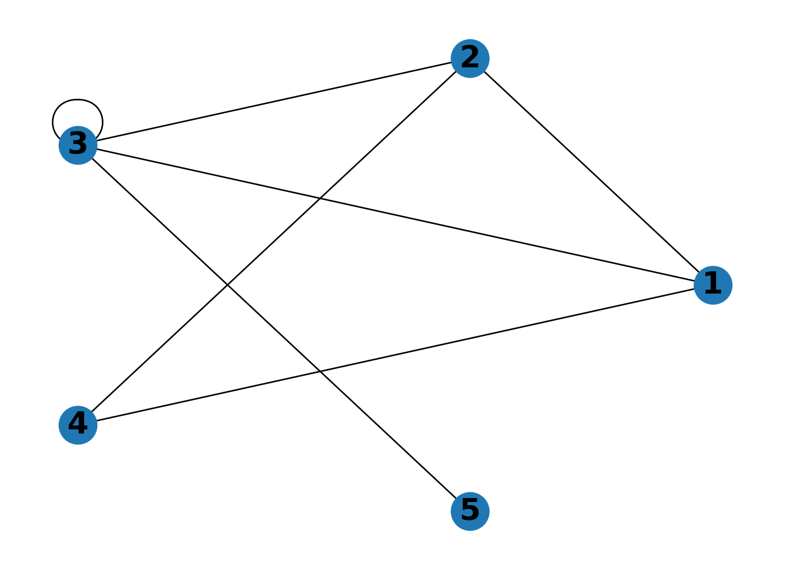

Implémentation d’un graphe
Par définition, on peut représenter un graphe par l’ensemble de ses sommets et l’ensemble de ses arêtes (pour un graphe non orienté) ou de ses arcs (pour un graphe orienté).
On étudie dans cette section des représentations alternatives d’un graphe.
Graphes non orientés
Définition 1 (Sommets adjacents) On dit que deux sommets d’un graphe sont adjacents s’ils sont reliés par une arête.
On peut alors représenter un graphe par des listes d’adjacence : on attribue à chaque sommet la liste des sommets qui lui sont adjacents. En pratique, on peut stocker ces listes d’adjacence dans un dictionnaire où chaque clé est un sommet et la valeur associée à cette clé est la liste des sommets adjacents à celui-ci.
Plus rigoureusement pour un graphe non orienté \(G=(S,A)\), on attribue à chaque sommet \(s\) une liste d’adjacence \(L[s]\) de la manière suivante :
\[ \forall s\in S,\;L[s]=\left[t\in S,\;\{s,t\}\in A\right] \]
Le graphe précédent est représenté par les listes d’adjacence suivantes.
{1: [2, 3, 4], 2: [1, 3, 4], 3: [1, 2, 3, 5], 4: [1, 2], 5: [3]}Ceci signifie par exemple que les sommets adjacents au sommet \(2\) sont les sommets \(1\), \(3\) et \(4\).
Note
Certaines informations dans les listes d’adjacence d’un graphe non orienté sont redondantes. Par exemple, les listes associés aux sommets \(1\) et \(2\) nous informent à deux reprises que les sommets \(1\) et \(2\) sont adjacents.
Si les sommets sont numérotés de \(1\) à \(n\), on peut également représenter un graphe par une matrice d’adjacence. Il s’agit d’une matrice de taille \(n\times n\) dont le coefficient \((i,j)\) vaut \(1\) si les sommets \(i\) et \(j\) sont adjacents et \(0\) sinon.
Plus rigoureusement, pour un graphe non orienté \(G=(S,A)\) la matrice d’adjacence \(M\) est définie par
\[ \forall(i,j)\in S^2,\;M_{i,j}=\begin{cases}1&\text{si }\{i,j\}\in A\\0&\text{sinon}\end{cases} \]
Le graphe précédent est représenté par la matrice d’adjacence suivante.
\(\displaystyle \left[\begin{matrix}0 & 1 & 1 & 1 & 0\\1 & 0 & 1 & 1 & 0\\1 & 1 & 1 & 0 & 1\\1 & 1 & 0 & 0 & 0\\0 & 0 & 1 & 0 & 0\end{matrix}\right]\)
Note
La matrice d’adjacence d’un graphe non orienté est toujours symétrique.
Graphes orientés
On peut également représenter un graphe orienté par des listes d’adjacence. On peut par exemple attribuer à chaque sommet \(s\) du graphe la liste des sommets terminaux des arcs issus de \(s\).
Plus rigoureusement pour un graphe orienté \(G=(S,A)\), on attribue à chaque sommet \(s\) une liste d’adjacence \(L[s]\) de la manière suivante :
\[ \forall s\in S,\;L[s]=\left[t\in S,\;(s,t)\in A\right] \]
Le graphe précédent est représenté par les listes d’adjacence suivantes.
{1: [2, 4], 2: [3, 4], 3: [1, 3], 4: [], 5: [3]}Si les sommets sont numérotés de \(1\) à \(n\), on peut également représenter un graphe orienté par une matrice d’adjacence. Il s’agit d’une matrice de taille \(n\times n\) dont le coefficient \((i,j)\) vaut \(1\) s’il existe un arc menant de \(i\) à \(j\).
Plus rigoureusement, pour un graphe orienté \(G=(S,A)\) la matrice d’adjacence \(M\) est définie par
\[ \forall(i,j)\in S^2,\;M_{i,j}=\begin{cases}1&\text{si }(i,j)\in A\\0&\text{sinon}\end{cases} \]
Le graphe précédent est représenté par la matrice d’adjacence suivante.
\(\displaystyle \left[\begin{matrix}0 & 1 & 0 & 1 & 0\\0 & 0 & 1 & 1 & 0\\1 & 0 & 1 & 0 & 0\\0 & 0 & 0 & 0 & 0\\0 & 0 & 1 & 0 & 0\end{matrix}\right]\)